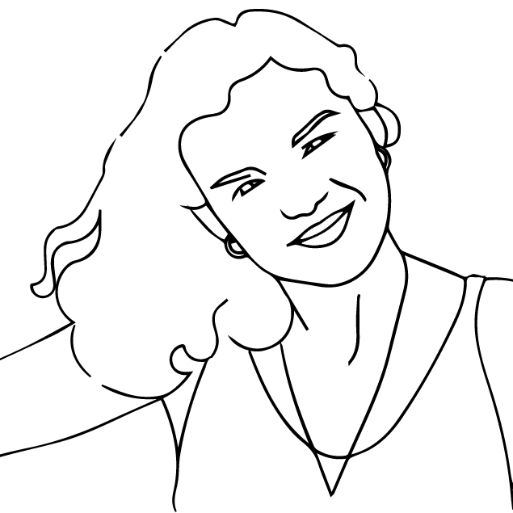

I'm a designer and deep thinker.
Driven to create meaningful experiences, I can code, research, draw, write, present, communicate and design.
My approach to designing and making is:
- User-centred.
- Empirical and agile.
- Artistic and forward-thinking.
- Holistic and empathetic.
- Every stage in the design process is informed by the needs or wants of the customer or "user".
- I do not make assumptions about how the user sees or experiences the world; I hypothesise and I investigate. I strongly believe in the value of obtaining user feedback, then having the agility to incorporate learnings as efficiently and effectively
as possible.
- A self-taught coder and artist at heart, I am able to respond intelligently and sensitively to both technological and aesthetic requirements.
- I think about design in terms of crafting a dynamic experience, rather than a static thing, syncing with the user's lifestyle, thoughts, feelings, and sensations. My ultimate aim is to create something that resonates with the user's identity,
and the way they perceive or experience the world.
Organisations I've worked with include:

My Story

Always learning, I apply a "can do" attitude to digital media. Alongside freelancing, I have lectured on Interaction and Interface Design at the University for Creative Arts.
In addition to UX, I am passionate about yoga, teaching hot Vinyasa Flow on Thursdays and Sundays in Hackney. Having studied French, Spanish and Philosophy at University, I am trilingual and love cross-culturally studying human nature. I am fascinated by: feminist film culture, tech for good, psychological and philosophical theories of embodiment and extended cognition.
Publications
I write on a semi-professional basis, using journalism as an exploratory tool.
- How to live mindfully, every day.
- On Cinema, Philosophy and interdisciplinary thinking.
- Art and Design: interviews and features.
-
"The Ultimate Guide To Taking Yoga Off The Mat", Yoga International, February 7th 2017 (9/10 from around 1000 reviewers).
-
"Improve Your Relationships Through Yoga", Om Magazine (print edition), February 1st 2017.
-
"6 Red Flags To Watch Out For In The Era Of Yoga Consumerism", Yoga International, November 28th 2016.
-
"Representing Masculinity in Bigas Luna...", Film Matters, TBC, 2017.
-
"How My Liberal Arts Degree Prepared Me For Learning To Code", SheCanCode, September 30th, 2016.
-
Analysing cinematic adaptations of Stephen King's Carrie (1974). "Getting Carrie'd Away With Female Sexuality", Diabolique, September 23rd, 2016.
-
Non-white, non-male persons have not experienced modernity in the same way as men, globally speaking. So what does the age of postmodernism mean for these groups? "Postmodernism: Where Do Women Fit In?", Undercurrent Philosophy, September 19th 2016.
-
Why are recent Spanish Horror films almost always about a woman's suffering? "The Female Martyrs Of Spanish Horror Cinema", Diabolique, September 2nd, 2016.
-
Travelling shouldn't just be about confirming our preconceptions of a place; we should be more open to spontaneity and interactions with local people. "How To Connect With Locals Abroad", The Bubble, September 16th, 2015.
-
Colour as a cultural phenomenon. "Rainbow People", Archer Abroad, July 9th 2015.
-
Visiting Frida Kahlo's house, and exploring the artisanal landscape of Mexico. "Artesanos and Artistas", Archer Abroad, July 6th 2015.
-
Speaking with David McAdam Freud, son of Lucian Freud, about carving his own path in the art world. "My Conversation With David McAdam Freud", The Bubble, February 25th 2014.
-
Interview with portraitist, Carmel Debreuil. "Playing Is Serious Business", The Bubble, June 10th 2014.
-
Feature on contemporary Dutch design by Marcel Wanders. "Dutch Design: Take Another Look", The Bubble, May 4th 2014.
-
Interview with experimental artist, Gina-Maria Marchella McCarthy, "Local Artist Collects Human Hair For Her Art", The Bubble, April 4th 2014.
-
A catch up with installation artist, Gina Czarnecki. "Interview With Artist Behind 'I' At Lumiere [Light Festival]", The Bubble, November 17th, 2013.
-
Feature on graffiti artist, Hush. "What's All The Hush About?", Palatinate, 2013.